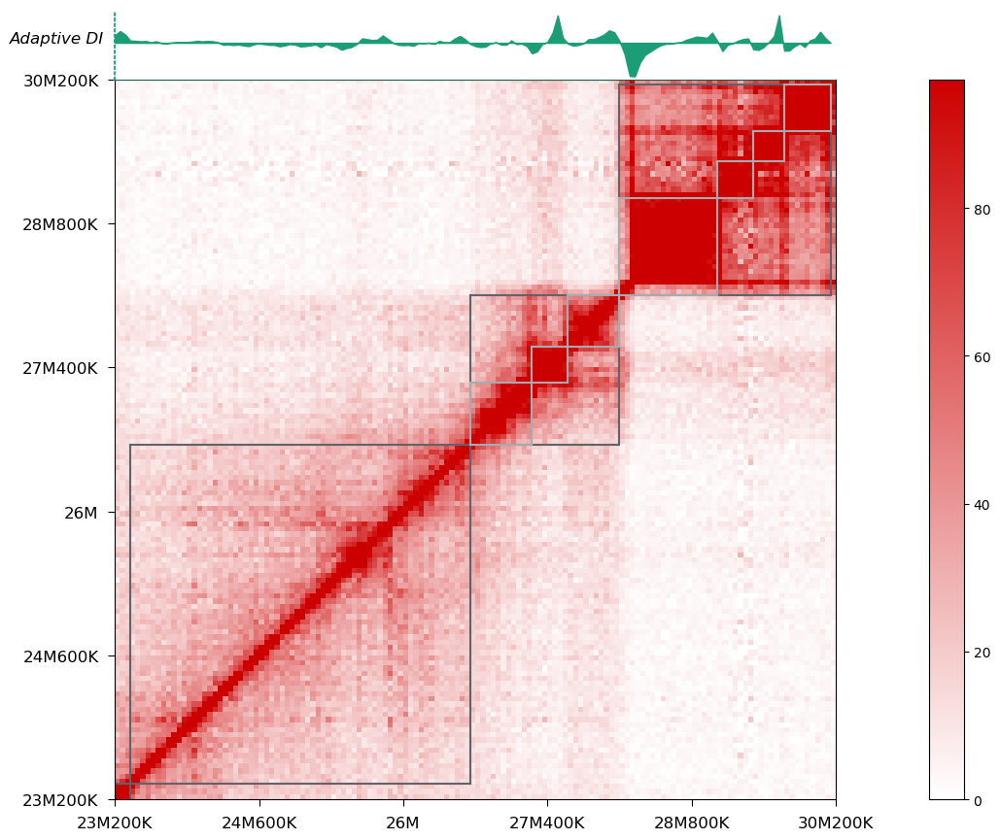

Hierarchical TAD¶
Introduction¶
HiTAD is a method to detect hierarchical TADs, including TADs, sub-TADs and smaller domains. Except local insulations, HiTAD further constrains TADs as the optimal domains to globally separate intra-chromosomal interactions. Under objective functions derived from chromatin interactions, HiTAD adopts an iterative optimization procedure to detect hierarchical TADs. HiTAD performs well in domain sensitivity, replicate reproducibility and inter cell-type conservation. Application to human and mouse cell types (including both traditional Hi-C and in situ Hi-C data sets) reveals that there exist common change types for hierarchical TADs, which are involved in shaping higher-order compartment, replication timing and transcriptional regulation.
Snapshot¶
This tutorial will cover the two most commonly used tools/submodules in HiTAD:
hitad
A command-line tool streamlining our 5-step identification algorithm:
- Calculate adaptive directionality index (DI) for each bin.
- Detect bottom boundaries by 5-state Gaussian mixture Hidden Markov Model using adaptive DIs as input.
- Identify TAD from bottom domains by optimally separating intra-chromosomal interactions under chromosome-level objective functions.
- Recursively identify inner domains under domain-level objective functions to optimally separate intra-domain interactions.
- (Optional but recommended) Perform domain alignment between two replicates and only the reproducible domains are maintained to generate the final hierarchical TAD list.
Note
If the two replicates are comparable in sequencing depth, then step 5 can improve the accuracy and reliability while guaranteeing the sensitivity of called domains; otherwise, you’d better merge the replicates into one dataset and step 5 will be skipped in this case.
aligner
A submodule containing classes and functions for our proposed domain alignment strategy. In our work, this strategy is used in reproducible domain detecting and change type defining at both boundary and domain level.
Tutorial¶
Hierarchical TAD Identification¶
Data Preparation¶
Since version 0.4.0, the input Hi-C matrix must be in cool format.
Depending on what data you already have, there are different tools you can choose to generate cool:
- If you are starting from the beginning (FASTQ/SRA), I recommend using runHiC, a user-friendly and efficient Hi-C data processing tool developed by our lab.
- If you are an old user of TADLib and have NPZ/TXT Hi-C matrix at hand, you can use the toCooler script distributed with another software of mine hicpeaks.
- In other case, try cooler official tools.
Usage¶
hitad [options]
To run hitad, you need to prepare a TXT meta data file specifying the resolution (in base-pair unit), replicate label and cool URI information in a structured way. For example, if you want to use two replicates to improve reliability of identified domains (as we did in our work), your metadata file should look like this:
res:int
rep1:/path/to/the/rep1/cool/URI
rep2:/path/to/the/rep2/cool/URI
Or if you have only one replicate or the sequencing depths between two replicates are quite different:
res:int
rep1:/path/to/the/rep1/cool/URI
Then just follow the pseudo command below:
$ hitad -O test.txt -d meta_file --logFile hitad.log
-O/--outputOUTPUTOutput file name.
-d/--datasetsDATASETSMetadata file path describing your Hi-C data
--logFileLOGFILELog file name. (Default: hitad.log)
Two files “test.txt” and “hitad.log” will be generated under current working directory. We use a rotating file for logging. According to our settings, when the size of “hitad.log” gets about 200K, it’s closed and renamed to “hitad.log.1”. At the same time, a new file “hitad.log” is silently opened for output. In a word, the system saves old log files by appending the extensions “.1”, “.2” etc., and the current log is always written to “hitad.log”:
"test.txt" contains 4 columns indicating chromosome label, domain start (bp), domain end (bp),
and hierarchical label, respectively. In our notation, TAD is denoted as level 0, sub-TAD is denoted as level 1, and subsequent domain level is denoted as level 2, etc.:
22 18240000 18560000 0
22 19000000 19640000 0
22 19920000 20120000 0
22 20800000 21480000 0
22 22040000 22320000 0
22 22320000 22720000 1
Other Options¶
--maxsizeMAXSIZEMaximum domain size in base-pair unit. (Default: 4000000)
--removeCacheRemove cached data before existing. (Default: False)
-p/--cpu-coreCPU_CORENumber of processes to launch. (Default: 1)
-v/--versionPrint version number and exit.
-h/--helpShow help message and exit.
Visualization¶
Since version 0.4.0, I have included a handy script called tad-plot for hierarchical domain visualization:
On top of the heatmap is the adaptive DI track, which has been recorded in your cool file after executing hitad. You can also choose to visualize domains on the arrowhead-transformed heatmap:

Output DI track¶
To facilitate integrative analysis and visualization in a standard genome browser, I also added a script called output-DI in 0.4.0, which is able to export the adaptive DI track in BedGraph format for any genomic regions.
Domain Alignment¶
Traditionally, domains and boundaries are aligned by matching boundaries with nearest ones between two data sets. This strategy generally assign a threshold in advance to determine whether a boundary of one data set exists in the other data set. However, the selection of the threshold is quite empirical and artificial. To deal with this problem, we propose a parameter-free alignment strategy by maximizing the overlap ratio between matched domains and considering all domains at the same time. We also generalize the strategy on hierarchical TADs and further define change types at both boundary and domain levels systematically.
All related classes and functions are defined in tadlib.hitad.aligner, refer to
API Documentation for
more details.
API Documentation¶
API reference of our defined classes and functions for hierarchical TAD identification and domain alignment.